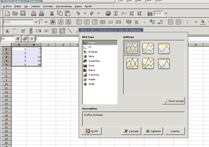

Este documento presenta algunas herramientas que pueden ser de utilidad en diferentes niveles de aprendizaje, desde el preescolar, hasta la universidad y en entornos de producción. Todas las herramientas tiene un costo de $0 por licenciamiento para cualquier cantidad de máquinas. Se propone herramientas para producir documentos y creaciones colaborativas abiertas. La versión más actualizada de este documento la puede encontrar en http://igor.tamarapatino.org/escritos/matematicas/matematicasayudasposibles.html
El autor es Igor Támara quien es dueño de los derechos de reproducción
Presentaremos algunas herramientas que pueden emplearse desde Primaria, de geometría, cálculo para emplear locales en el computador, otras vía web y otras para escribir documentación de alta calidad, finalizando con la oportunidad de compartir conocimientos y construir de forma colaborativa talleres, contenidos y ejercicios.
Desde preescolar se puede comenzar a afianzar operaciones básicas para lograr agilidad mental, al llevar conteos, hacer sumas, restas, multiplicaciones, divisiones, Gcompris trae más de 15 actividades como conocimiento de la hora del reloj, descubrir números con incógnitas y que podrían ser utilizadas especialmente en matemáticas
Por otra parte se encuentra Atnag, una herramienta de autor que adicionalmente permite llevar el registro de cada una de las actividades que lleva a cabo los estudiantes y los resultados de las mismas, permite personalizar las actividades de acuerdo a los grados. Por la concepción de esta herramienta, es posible que los contenidos o las preparaciones de los cursos puedan ser compartidas por varios docentes.
Un juego de acción es tuxmath, adicionalmente muchos juegos freeware pueden ser emulados con herramientas como xmame, xmess, zsnes o wine. Estos últimos requieren que todas las imágenes ROM estén legalizadas en la cantidad de equipos que se deseen instalar. De esta forma se puede reutilizar programas hechos para máquinas como Apple II, Commodore 64, Tandy Color Computer II e incluso Windows.
Adicionalmente a los juegos llenos de gráficos y que tienen sonidos, se puede emplear programas que trabajan en terminales de modo texto, como por ejemplo arithmetic quiz, que en conjunción con un sistema de síntesis de voz como festival, permitiría por ejemplo a invidentes aprovechar estas herramientas.
En esta imagen se mostraba xabacus, geomview, mathwar, xcalc y algunas ventanas con xaos, el primero un ábaco con posibilidad para trabajar órdenes de magnitud alto, el segundo para hacer visualización de figuras geométricas en 3 dimensiones, el cuarto para afianzar agilidad en operaciones matemáticas básicas, una calculadora sencila y el último un ejemplo de visualización de funciones matemáticas como conjuntos de Julia, Mandelbrot, Newton para hallar raíces entre otros.
Hasta este momento las herramientas se han enfocado específicamente al afianzamiento de habilidades como el conteo, y en algunos casos la ubicación espacial, pero aún hay más opciones para enfocar los esfuerzos en los aspectos geométricos para mejorar la ubicación y abrir espacio para la imaginación. Claro, a excepción de la muestra de geomview, que mostraría objetos geométricos en tres dimensiones.
Las construcciones con regla y compás pueden hacerse interactivamente con herramientas como Dr. Geo, que junto con la habilidad del profesor, pueden emplearse para pensar en demostraciones geométricas y hacer construcciones y mediciones de los elementos construidos a partir de puntos, rectas y el compás.
Inicialmente la recomendación es permitir al estudiante usar las herramientas manuales, para posteriormente llevar a los estudiantes al aula de cómputo y hacer verificaciones que ya se han hecho en papel, o hacer construcciones iterativas o recursivas que demandarían mucho tiempo hacerlas con reglas y compases manualmente.
Otras opciones para estas mismas tareas son kig y kseg, presentes en la captura de pantalla anterior, en la cuál también está presente kturtle, una de las opciones para trabajar con Logo, adicionalmente a ucblogo y Python con el módulo turtle.
Hacer gráficas de funciones de una variable en dos dimensiones es otra de las opciones que se desea tener en el colegio y en la universidad, para hacer representaciones de datos, o para revisar conceptos como amplitud, frecuencia y expresión de términos unos en términos de otros, para tales labores se recomienda gnuplot, con el cual se pueden crear gráficas de 2 y 3 dimensiones. Este programa debido a su madurez y estabilidad, generalmente es empleado por otros que ofrecen los datos para emplearlo en la visualización.
Por otra parte tambiéns e puede acudir a Grace para crear gráficos en dos dimensiones y para incluir texto o para hacer documentos para imprimir o incluir más información.
También es posible emplear hojas de cálculo para crear gráficos de 2 dimensiones a partir de datos discretos. Por ejemplo con gnumeric o con Calc de OpenOffice.org.

Acerca de estadística, el popular programa SPSS tiene una alternativa, no con todo el poder de la versión comercial, llamado PSPP que entiende el gran porción del lenguaje y es capaz de generar gráficos en postscript y generar archivos HTML con gráficos incrustados.
La comunidad matemática ha tenido una gran oportunidad a partir de TeX, LaTeX y sus extensiones, y particularmente en Linux se puede emplear con facilidad varios editores WYSIWYG, o se puede emplear poderosos editores como emacs con interfaces para generar documentación de matemáticas lista para imprimir y de alta calidad. En el gráfico a continuación se puede ver :
Editor WYSIWYG
Editor WYSIWYG
Editor de gráficos
Visualizador de postscript
Editor de texto que se puede configurar para trabajar cómodamente con LaTeX.
Y además de generar documentación para imprimir de alta calidad es empleado también para crear páginas web con contenidos matemáticos exportando con herramientas tales como HevEa o latex2html.
Wims.
Maxima es una opción que integra opciones para hacer cálculos interactivos y proponer ejercicios y construir operaciones a partir de un HTML extendido, con el cual se crea documentación interactiva.